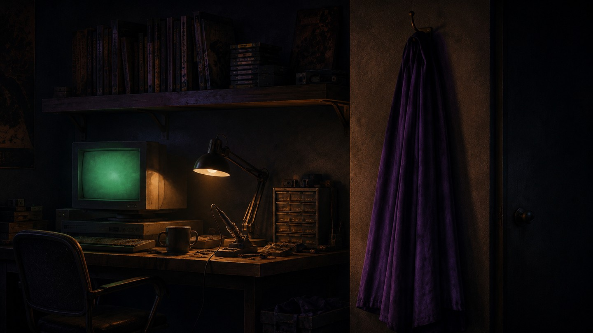

Everybody gets a cape
Last Wednesday night I shipped more from my couch than the 2015 version of me shipped in a good month. A twenty-year-old photo collage edited down to the pixel. A full site deploy. A brand-new repo with a profile card designed over dinner. Four commits, every one reviewed and approved by a human before it moved: me. The heavy lifting came from an AI copilot that never gets tired, never gets bored, and never needs the mission explained twice.
That is a superpower. Not a metaphor for one. One person now carries the output of a small team in their pocket, on demand, for the price of a streaming subscription. And it is not just my trade. Writers, analysts, medics, mechanics, teachers: the capes are being handed out to everybody, right now, mid-flight.
Here is the part they leave out of the origin story. The cape is brand new. The pilot is not.
Savanna-spec hardware
Your nervous system finalized its spec long before the first city, let alone the first push notification. We evolved to keep track of a small band of familiar faces and to react to threats we could see coming across open ground. That build has not had a meaningful hardware refresh since.
A paper published this July in Behavioral Sciences, from researchers in Singapore, argues that modern life has simply outrun the spec. They call it the Social Evolutionary Mismatch and Competition Hypothesis: vast networks instead of small bands, constant connection instead of episodic contact, and a permanent low-grade sense of competition against a feed of strangers our ancestors never had to measure themselves against. The authors stack up the compounding pressures of the era, pandemic aftershocks, economic churn, climate anxiety, and call it a polycrisis. The advance of AI is on their list. Sit with that for a second: the same wave handing out the capes is also part of the load.
It is a fresh hypothesis, peer reviewed but still waiting on real-world field tests, and I am presenting it as exactly that. But the prescription is the part I believe in my bones, because I have watched it hold true in uniform and in server rooms: the researchers do not argue for rolling the technology back. They argue for designing our environments, physical and digital, to work with evolved human nature instead of against it.
In other words, breathing room is not a wellness perk. It is a design requirement.
The writer who benches his gods
Comics reached this conclusion ahead of the behavioral scientists. Or at least one writer did.
Tom King spent years as a CIA counterterrorism officer before he ever scripted a cape, and DC markets him exactly that way. His heroes are the most powerful beings in their universe and the most nakedly human: tired, haunted, holding a normal life together between apocalypses. He has been open about why. Talking about the period that inspired his most controversial book, King put it plainly: "The first thing I did when I broke was hide it."
Heroes in Crisis is that sentence built into architecture. Superman, Batman, and Wonder Woman quietly construct Sanctuary, a confidential trauma-recovery facility disguised as a lonely farmhouse in rural Nebraska. Kryptonian technology under the floorboards, patients masked so their anonymity survives even inside, the whole place staffed by AI. Read the roster of founders again. The three most capable beings on the planet surveyed everything they could possibly build and decided the missing infrastructure was a place to put the weight down. And in a detail almost too on-the-nose for this essay, the refuge itself is run by artificial intelligence: machines keeping confidence for humans who finally admitted they needed the room.
The series divided readers, and I understand why; the sanctuary becomes a crime scene, and the fallout is hard to sit with. But notice what the tragedy turns on: a grieving speedster breaking into the AI's confidential records. Even in fiction, the most dangerous asset in the building was the database of human vulnerability. Somewhere, a security architect just felt a chill.
If Heroes in Crisis is the thesis, Mister Miracle is the proof. Scott Free is the greatest escape artist in existence; the one trap he cannot spring is the inside of his own head. King and artist Mitch Gerads show him and Big Barda surviving a cosmic war by defending something smaller: a condo, a couch, a conversation about a vegetable tray while the sky burns. The domestic scenes are not filler between the fights. They are the fight. Dread in that book is ambient, always humming under the panels, and the counterprogram is never one more punch. It is a home.
He even ran the experiment in reverse in The Vision, an android who builds a suburban family because he wants what humans have; in King's work, the traffic between person and machine moves in both directions.
That is what humanizing a superhero actually means. Not weakness. Load-bearing honesty about the person under the power.
And you no longer need a comic shop to meet these ideas: Lanterns is arriving on HBO, Woman of Tomorrow just became the Supergirl film, and Mister Miracle is becoming an animated series about an escape artist living with PTSD.
Run below redline
King has lately had to say out loud what most veterans of that era learned to carry quietly. Asked about his CIA years during the Lanterns press run, he was blunt: he was 23, he thought the invasion of Iraq was a mistake, and he went anyway, because the work in front of him was stopping attacks that would have killed people, and walking away from that was never a real option. Agree or disagree with any war; that is not the point here. The point is the weight. A duty can be heavier than your opinion of the policy that created it, and you carry it anyway, for years, mostly in silence.
I know that weight from the uniformed side of the same era. I finished initial entry training on the morning of September 11th, 2001; the date is printed on my diploma. Everything after was service in wartime's long shadow: Bosnia on peacekeeping orders, then the Middle East, including Iraq. What you believe about a policy does not get a vote in whether you go. The people next to you are going. The mission has people in it. So you go, you do the job in front of you, and the sorting out of what it all meant becomes homework you assign yourself for later. Sometimes decades later.
That homework is the weight Sanctuary was built for. King did not invent superhero trauma. He finally gave it a building.
From a junior-year enlistment in 2000 to retiring as a Major in Military Intelligence in 2024, field doctrine kept teaching me a blunt truth my civilian calendar keeps forgetting: rest is operational. You write sleep plans into a mission because exhausted soldiers make fatal errors, and no commander in history has called the sleep plan a perk.
Cybersecurity taught me the same lesson about machines. No system I have ever secured runs at one hundred percent utilization on purpose. We rate-limit. We schedule maintenance windows. We hand services error budgets and let them spend downtime without shame. We throttle a hot CPU before it cooks itself, and nobody accuses the CPU of quiet quitting.
Then we sit down at the keyboard and run the one legacy system we can never patch, never migrate, and never restore from backup at redline, every day, and we call it drive.
ken@hello-future:~$ htop --human load average: 3.97, 3.97, 3.97 (design spec: 1.00) PID USER CPU% TIME+ COMMAND 001 ken 397% 26y+ cape.exe --always-on 002 ken 84% 03:12 comparison_engine (feed of strangers) 003 ken 61% 11:47 doomscroll.service 004 ken 12% 00:02 breathing ken@hello-future:~$ systemctl status sanctuary.timer ● sanctuary.timer - nightly maintenance window for one (1) human Trigger: 22:00 America/New_York Next: tonight Docs: see Trinity et al., rural Nebraska deployment
Even King still runs hot. In the same press run he credits CIA sleep-deprivation training for surviving his schedule, months of two or three hours a night then, writing until 3 a.m. now, and his own three-word verdict on that training was "You go insane." The man who built Sanctuary on the page is still learning to visit it off the page. Insight is not a protocol. Which is exactly why the next part gets written down.
So here is my protocol, written down mostly so I have to keep it. The AI does the heavy lifting; I direct, review, and approve, and the gate stays human. Some evenings the laptop closes and the workbench opens, because a soldering iron cannot ping me. Comics get read on paper, slowly, the way the dime store intended. Walks happen with nothing in my ears. Sleep gets planned like the mission depends on it, because the mission is long and it does.
None of that slows the building down. It is what makes the building survivable. Ask the Trinity. They did not shut down the Justice League. They built Sanctuary next door.
The den
This site is called a den on purpose. A den is where the animal goes to stop being hunted, and where a kid goes to read comics on the floor. Mine is both. It is where I file dispatches like this one, resurrect old hardware, and let an AI hand me superpowers a few hours at a time: human in the lead, disclosure on the art, approval gate on every push.

The future I am building toward is not humans working like robots alongside robots working like gods. It is people wearing capes who also know exactly where their sanctuary is.
Hang yours up tonight. The world will still need saving in the morning.
$ sleep 8h && make future
Further reading: ScienceAlert on the evolutionary mismatch research and the paper itself in Behavioral Sciences; DC's introduction to Sanctuary; Tom King on the origins of Heroes in Crisis at SDCC, via Newsweek, and on Lanterns, the CIA, and sleep, via Variety; and in print, The Sheriff of Babylon, King and Mitch Gerads writing the Iraq war directly.